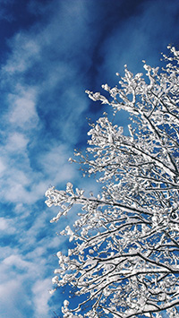

This month we’ll be focusing on the effects of winter on both deciduous and evergreen varieties. As we brace for the colder months ahead in Atlantic County, it’s not just us who need to prepare; our arboreal companions do too. Deciduous trees, known for their seasonal leaf shedding, undergo a remarkable transformation to conserve energy and resources in response to shorter days and cooler temperatures. In contrast, evergreen trees maintain their greenery throughout the year but are not immune to winter’s challenges. They face unique issues like desiccation, frost damage, and the heavy load of snow and ice. In this post, we’ll explore these changes in detail, offering insights into how an Atlantic County tree service plays a crucial role in helping these natural giants withstand the rigors of winter. Join us as we uncover the secrets of how trees adapt and thrive in the face of chilly adversities.
What Happens to Deciduous Trees in Winter
Deciduous trees undergo several changes during winter. The process is largely driven by the shorter days and cooler temperatures. Leaves die and drop off, trees go into a state of dormancy, and eventually they begin to prepare for spring.
As days shorten and temperatures drop, deciduous trees begin to prepare for winter. The chlorophyll, which gives leaves their green color and is essential for photosynthesis, breaks down. This reveals other pigments like carotenes and anthocyanins, leading to the colorful autumn foliage. Eventually, the leaves are shed. This shedding helps the tree conserve water and energy during the harsh winter months. Without leaves for photosynthesis, deciduous trees rely on the stored energy in their roots and trunk. They have to efficiently manage these reserves to survive until spring.
In order to conserve energy, deciduous trees enter a state of dormancy. Dormancy is a survival strategy to withstand winter conditions. During dormancy, metabolic activities slow down significantly, conserving energy and allowing trees to survive on less. Water is less accessible because it might be frozen and the cold temperatures could damage plant cells.
Another way to protect themselves from the cold, trees undergo physical changes aside from the loss of leaves. The cell composition is altered to prevent freezing. For example, they might increase the concentration of substances in their cells that act like antifreeze, reducing the risk of cells bursting due to freezing.
Lastly, during late winter, trees begin the slow process of awakening from dormancy in response to increasing temperatures and day length. They start to mobilize stored energy and prepare for the burst of growth that occurs in spring.
Evergreens are Affected by Winter Also
Although they are generally better adapted to cold conditions than deciduous trees, winter can affect evergreen trees. Despite the fact that they don’t lose their needles, these trees also go through some changes. Here are some of the ways in which winter impacts evergreens:
Evergreen foliage can be damaged by frost and extreme cold. The needles or leaves may turn brown or red, a condition known as “winter burn.” This is often more evident on the side of the tree facing the wind or sun. Evergreens continue to lose water through their needles in winter, but frozen ground can limit water uptake by the roots. This can lead to desiccation, especially in windy conditions or during periods of winter sun, which increases evaporation. Furthermore, the branches of evergreen trees can become laden with snow and ice, which may lead to breakage, especially in heavy snowfall areas. This is particularly a concern for trees with a broad, spreading form. Lastly, freezing and thawing cycles can affect the soil structure, potentially damaging tree roots. This can impact the tree’s stability and health.

Despite these challenges, evergreens are generally well-equipped to handle winter conditions. Their needles are adapted to conserve water, and their overall structure is designed to withstand cold and snow. Proper care and management, especially in urban or landscaped environments, can help mitigate these winter stresses.
Contact us for Your Atlantic County Tree Service
As we wrap up our discussion of how winter affects both deciduous and evergreen trees, it’s clear that trees have remarkable strategies to endure the cold season. While deciduous trees retreat into dormancy, shedding their leaves to conserve energy, evergreens stand strong against the stark winter landscape, battling cold, dehydration, and the weight of snow and ice. Understanding these natural processes not only deepens our appreciation for these magnificent organisms but also underscores the importance of thoughtful tree care. Services provided by Atlantic County tree service companies like ourselves are indispensable in ensuring the health and safety of our trees so contact us today for all your trees needs. Whether it’s pruning, mulching, or protecting against pests and diseases, proper care can make a significant difference in the life of a tree.